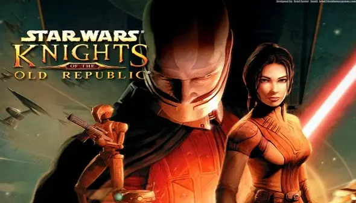
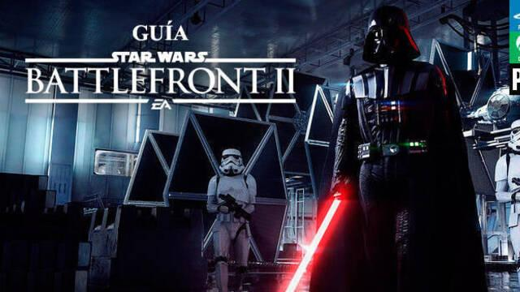
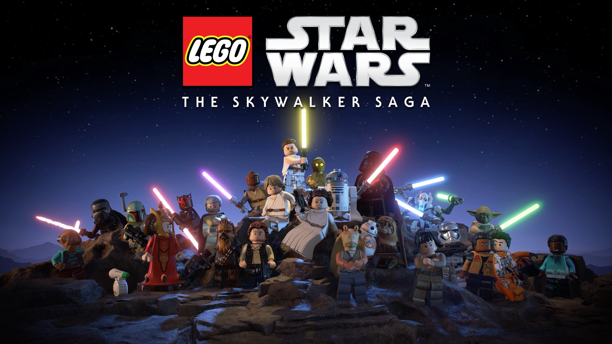
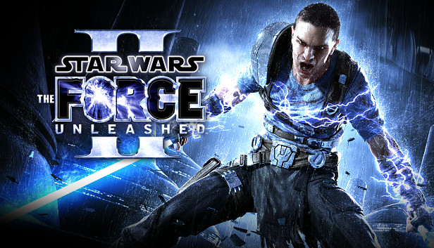

--------------- JUEGOS ---------------
El universo de Star Wars no solo se expandió en el cine y las series, sino también en el mundo de los videojuegos, donde a lo largo de los años se desarrolló una enorme variedad de títulos para distintas plataformas y estilos de juego. Desde aventuras narrativas hasta juegos de acción y estrategia, la saga logró conquistar también a los jugadores, permitiéndoles vivir sus propias historias dentro de la galaxia.
Muchos de estos juegos no solo adaptaron momentos icónicos de las películas, sino que también ampliaron el universo con nuevas tramas, personajes y conflictos que enriquecen la experiencia original. Gracias a esto, los fans pudieron explorar el lado Jedi, el lado oscuro o incluso historias completamente independientes, tomando decisiones y participando activamente en el destino de la galaxia.
A continuación, repasamos algunos de los juegos mejor valorados por la crítica y los fans, que supieron capturar la esencia de Star Wars y ofrecer experiencias inolvidables.

Star Wars Jedi: Fallen Order (2019)

Star Wars Battlefront II (2017 - versión mejorada)

LEGO Star Wars: The Skywalker Saga (2022)
